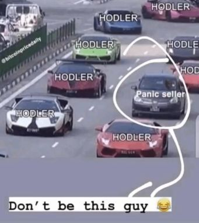
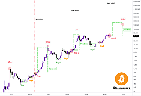
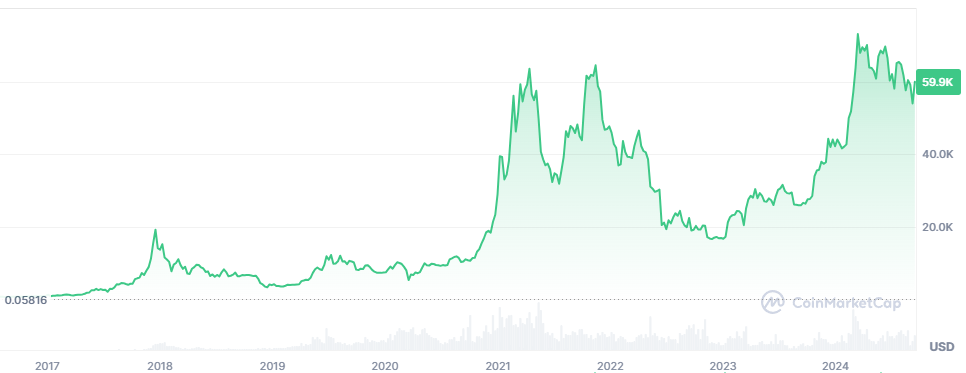

|
PRooFPS-dd Dev Doc 1.0
PRooFPS-dd Developer Documentation
|
|
PRooFPS-dd Dev Doc 1.0
PRooFPS-dd Developer Documentation
|
This page is about how to make money with crypto.
Written by PRooF, using my own experience.
!!! NFA and DYOR (Not Financial Advise and Do Your Own Research) !!!
Don't get lost on this page, use the Table of Contents, that's why it is there.
And never forget the most important rule: Never lose money. :)
Quick link to my altcoins table.
To get RICH.
If you are not an idiot, then it is not riskier than investing in stocks.
REAL MEN are expanding their portfolio with crypto, not avoiding it.
When there is a pandemic, a war or an economic breakdown, or any other bigger crysis, both the crypto- and stock market fall together anyway.
The exact amount of money you wouldn't mind losing.
A lot of noobs did put most of their salary into crypto because they heard it can go up to 10 times.
And then by the end of the month they had to sell their crypto in loss because actually they needed that money to buy food and pay the bills.
If you don't have game money then don't buy crypto.
So only put in the money you would otherwise spend on drinks or other useless stuff.
Also, this is longer term investment, you should not expect big returns within a few weeks!
At the same time, you have to understand: you need money to make money. Small money will bring small money.
You put in $100, not much chance of multiplying it by 10 easily. But, if you make 10x, you can consider yourself lucky, and it is still only $1000, you are still nowhere.
Thus, you need to put in big money to make big money!
Later in this document I made a section about what to buy: I believe that for Easy Level and Medium Level you can invest more money with more safety than on other levels.
| Pros | Cons |
|---|---|
| Easiest, convenient. Relatively safe coins (e.g. not honeypot). | High Tx fees. Not all coins/tokens can be found here. |
Not good for frequent trading because of the extra fees you are paying to Revolut for each transaction.
But this one is the most convenient for a beginner. Suitable if you wanna keep your money in crypto for long-term (years) profits.
Also, the coins listed here are more safe to buy, i.e. not tricking you into a honeypot, etc. Still, price is volatile, so be careful!
As per my latest info there is no way to convert your crypto to other crypto but maybe they already implemented it in 2024.
| Pros | Cons |
|---|---|
| Less Tx fees. More coins/tokens can be found here. Can trade between coins without converting to/from fiat money in between. Relatively safe coins (e.g. not honeypot). Tools like trading bots, copy trading. | Registering takes some time (KYC). Sometimes you need to re-do part of KYC even when you want to send money into the CEX. Can suddenly disappear, so dont keep your money there long-term. |
Centralized crypto exchanges offer various trading options including borrow (loan), bots, and probably more suitable for frequent trading.
However, you still gonna pay some extra fee to the CEX but probably less than to Revolut.
Some coins/tokens are available only thru CEX. Definitely broader range than on Revolut.
The biggest inconvenience is registering yourself and going thru the whole KYC process and properly securing your account before using it.
I feel like there is even more security measures in place than in online banking.
Once it is setup, it is easy.
Examples of recognized CEX are:
These exists for many years already and considered ok to use.
However, the general recommendation is NOT to keep your crypto there for long time but to withdraw it to your own crypto wallet.
In CEX, you also have a wallet, owned by the CEX (it is NOT yours!), so if the CEX disappears, you won't have access to your wallet anymore.
Such sudden disappears have already happened multiple times, examples:
So the recommended WoW for CEX is:
Anytime later if you want, you can send back (deposit) the crypto from your own crypto wallet to your CEX account, just dont keep your stuff in CEX for long term.
Since you can withdraw/deposit/trade your cryptocurrencies without involving fiat money in these exchanges, you save money on fees you cannot save using Revolut.
| Pros | Cons |
|---|---|
| Minor Tx fees. Some coins/tokens can be found only here. Can trade between coins without converting to/from fiat money in between. If you have your soft wallet ready, you do not need to register on DEX. | Requires you to have your own soft-wallet. Trading safety is not ensured, you might buy a honeypot. |
Unlike CEX, decentralized exchanges don't give you a wallet. You have to have your own crypto wallet that you connect to the DEX for trading.
But as I already recommended for CEX WoW, you should have your own crypto wallet anyway.
You cannot buy all coins/tokens on CEX, some are available only thru DEX.
However, if you are buying a coin/token on DEX which is not listed on a CEX, you should do additional verifications before buying. See honeypot scam in later section.
Examples of recognized DEX are:
They always say to buy low and sell high.
But what is low and what is high?
It is difficult to tell if the current price is low or high because we don't know what is the reference price.
The following rules might help.
Always check the all-time price chart of the selected coin and find reference points matching with global events, such as:
This way you can get a clue about what would be a correct reference price of the coin and compare its current price to it.
Also, some other decisions also have influence on Bitcoin price, like Fed (Federal Reserve) interest rate changes, halving events, etc.
Also, try to find shorter-term cycles in the price and try to time your buy when the current price seems to be at local low height.
Example: short-term cycles in SAD HAMSTER price.
There were around 6 cycles between 2024 Jun and Sep where one could earn at least 6x~50% gains.
Imagine you spent 100k HUF on HAMMY in Jun, then realize the total profit of ~1M HUF by the end of Sep!
I think most of my losses were because of FOMO-buys.
I immediately lost a lot of money when I started crypto-trading at the beginning of 2022 because that was the WORST timing for entering the market.
People made me believe at that time that I will miss the best chance so I entered. Few months later, I was in -80%.
Why? Because I FOMO'd myself.
Cryptocurrency prices are really volatile, what is expensive today will be cheap tomorrow and vice versa!
Still, the lesson is hard to learn.
So I made this separate section for this, to make sure I never do it again (I already did it many times even in 2024).
FOMO will lead to losses instead of gains, so NEVER buy anything just because its price has already started going up.
This is one of the most difficult part because it is about controlling your emotion: the fear and worry of missing a good chance.
Based on my experience you will just lose money and regret all the FOMO-buys.
Patience with buying something always brings gains.
This question is both the easiest and most difficult to answer.
If you want to invest zero time in it and want nice gains, buy Bitcoin and hold (hodl) it for years.
You can simply do this in Revolut too.
You can see some possible historical gains in the Example Bitcoin Trades table.
This way, you cannot lose money!
Keep Bitcoin even during tough times when you are in -50%!

As you can see in the below picture, Bitcoin gives three chances to buy before it goes parabolic:

|
If you want to invest more time and want even nicer gains in shorter term (weeks/months), then you need to have more diverse crypto portfolio, with cryptocurrencies of different sectors of the crypto world.
You should discover what altcoins are in the market and buy yourself in.
Usually the crypto projects have a white paper that explains the aim of the project and how they are planning to achieve the goals, who are in the team, etc.
Then using your investor vein, you can decide which project to invest in.
However, the sad truth is: most of the time the big gains are not brought by the best projects but by the current hype.
The current hype is like seasons: you don't want to see Christmas movie in the middle of summer, but maybe during winter.
So, my recommendation is to always look around on Twitter, Telegram and try to understand what the current hype is about.
For example, spring and summer of 2024 was about meme coins, especially on the Solana blockchain, big hype resulted in bringing in a lot of money, resulting in even more hype and more money.
Maybe it is late to invest them in Sep 2024, but who knows ...
An important thing is: when BTC goes down, 99% else also goes down. If BTC goes up, they also go up.
But the gains and the loses can be even more higher with altcoins, compared to BTC. This is the reason why we also invest in altcoins.
Also, not all altcoins are moving at the same time: it happens that a meme coin goes up, another does the same with 1-2 days delay, so this delay can be used to adjust your positions better.
To minimize time invested, just buy and hold XRP and SDEX for medium-term (weeks/months), as an addition to your long-term BTC holding.
Take profit when you want, then buy the dip, and repeat the process forever.
They are expected to be here with us for long time.
I made a table of some altcoins that might be also in your interest.
You can see in that document that I'm monitoring how their prices react to Bitcoin price.
I recommend short-term (weeks) cyclic trading with the top-row altcoins in that table.
TODO: add "Revolut" in the Misc. column if the token is available on Revolut.
Speculate to accumulate.
The advanced level involves listening to signals and analyzing the charts.
You can also try daytrading which is basically doing the same on daily basis. But this most probably leads to what happened to Wojak when he tried it.
Also, you can try trading bots which are auto-trading using your assets, based on custom parameters.
Such trading bots are available on CEX for free, you can also see setups of other users as well.
And there are external trading bots also which can use your soft wallet to trade, in this case no CEX registration is needed.
Degen is the short form of degenerate.
These levels of the crypto world are for degens who risk some money for big returns within a very short period of time (minutes/hours).
If you think that trading normal crypto is gambling, you are wrong: this level is the real gambling.
TODO: add about twitter, telegram, whatever.
See honeypot scam in later section.
On PumpFun anyone can create a coin on the Solana blockchain and other users can invest.
The idea is, once the market cap reaches a specific value, the coin becomes publicly tradeable on the Raydium DEX.
Then, the journey of the coin can continue, its market cap can further grow as outsiders also start buying it.
This can work only if the coin has a good narrative, the developer(s) and the community is active around it, social media is properly used for marketing, etc. A lot of good meme coins were born on this site.
There are 2 ways of making money here:
As of Sep 2024, 99.99% of the coins made here are NOT genuine, NOT made to establish a good community, and try to rip off any investor within a few moments.
The creators of most coins here don't even want their coin to make it to Raydium , just want a few people to invest and then rip them off ASAP.
Thus, if you want to make money by investing into someone's coin here, the only good buying strategy is:
This way, you can ensure the following:
People will hate me for writing this, as this is not how this site is supposed to work, but I have aligned based on my negative experiences and I don't want to be someone else's exit liquidity anymore, that's it.
If you do not sell as soon as you are in 10-20% profit, someone else will do, and you either have to wait much more time to be able to sell in profit, or eventually you will have to exit with loss.
Remember what happened to Wojak when he tried day trading!
If you want, you can repeat the above process with the same coin at its next dip, if you think there still will be people buying.
In Aug 2024 a similar website was born: SunPump.
The idea is the same, but this operates on the Tron blockchain, and its name comes from the creator of the blockchain (Justin Sun).
A successful meme coin that was created here and reaching higher and higher prices in 2024 is SunDog which is now also traded on the Gate.io CEX.
The classic rocket crash game also has its Solana-based versions where you can risk your Solana for possible big gains:
Note that there are other versions for other cryptocurrencies as well, use Google.
TODO
It depends on YOUR expectations of the coin.
But here is my opinion.
We never sell Bitcoin. We hold it for life!
But here are some example long-term gains with Bitcoin:
| Date of Buy | Entry | ~ Duration of Hold | Date of Sell | Exit | ~ Change |
|---|---|---|---|---|---|
| Mar 1, 2017 | 1k $ | 9 months | Dec 18, 2017 | 19k $ | x19 |
| Mar 1, 2017 | 1k $ | 1 year | Apr 1, 2018 | 7k $ | x7 |
| Mar 1, 2017 | 1k $ | 7 years | Apr 14, 2024 | 63k $ | x63 |
| Nov 14, 2021 | 64k $ | 1 year | Nov 12, 2022 | 17k $ | x0.25 :( |
| Nov 14, 2021 | 64k $ | 2.5 years | Mar 14, 2024 | 73k $ | x1.14 :| |
| Nov 12, 2022 | 17k $ | 1.5 years | Mar 14, 2024 | 73k $ | x4 |

As you can see, if your entry timing is bad, you need to hold longer to have some gains.
The morale of the story is: with Bitcoin, you can ALWAYS make some gains, even with bad entry!
Note that you should always buy and hold Bitcoin. Even if your first entry was bad, then wait for a big drop and buy MORE to bring down your average entry price.
There are some exceptional cases only when we are selling it.
Sell Bitcoin only when BOTH of the following conditions meet:
This is because Bitcoin is going to the Moon!
For example, I sold Bitcoin around $60k on Aug 3, 2024 because I sensed the negative global market sentiment being continued and expected the price to go down more.
So a few days later it could be bought back at $50k.
Selling Bitcoin must be temporal only.
Again: it depends on YOUR expectations of the coin.
Unlike Bitcoin, not all altcoins should be kept forever.
Especially meme coins because I think those are flying for limited time only. They are great for making money, but not so great for holding them forever.
Check my altcoins table for reference prices to have idea when they should be sold.
This topic is not crypto specific, this is coming from the stock market but applies to crypto as well.
This is basically the art and/or science of analysing charts and trying to understand the market from the charts, and try to predict the near future of price movement.
You should also watch the linked videos having "Trading" in their title.
Also I want to mention one of my favourite stuff is the Ichimoku cloud for predicting price movement.
TODO: add death cross / golden cross WoW summary.
Needless to say, chart analysis should be tied together with understanding the global sentiment.
Your chart analysis can also generate a buy or sell signal but you can also receive signals.
Signals can come from various sources, for example, Telegram groups. NEVER pay for signals or to become member of VIP groups!
You can receive chart analysis based signals in free Telegram channels/groups too.
I'm not going to recommend any specific on this page because I'm still not convinced if they are harmless enough but you can ask me in DM/PM.
Even if a signal tells you should buy, mind the global sentiment. You may postpone your buy, if the market situation implies a further downtrend.
Note that such Telegram groups usually have quite a large number of members, so even posting the signal can cause change in the asset's price, since they have influence on buying and selling the asset.
What I want to tell by this, is that just by posting a signal, influences the people to drive the price in the same direction as the signal predicts:
if signal predicts increasing price, then crowds will be buying the same asset, which causes price increase, then we can say yes, the signal was right. :)
Always avoid pump groups where they say that a specific asset's price will be pumped at a specific time, I call it as pump scam.
TODO explain Matt Furie, Pepe. Add the Pepe diagram. Add Boys' Club.
TODO
Before buying a token on a DEX, we should check if the token is actually safe to trade.
This safeness has nothing to do with the price, as the price is very volatile anyway.
The danger is that the smart contract (the code behind the token) may prevent us from selling the token after buying it. It can do it in multiple ways.
To avoid this to happen with us, before buying the coin/token, we should use honeypot checkers.
I use these:
TODO
TODO
TODO
This is country specific, but for Hungary the rules are clearly written on the web page of the National Tax and Customs Administration (NAV) here.
There are soft- and hard wallets.
It does not matter where/how you get your crypto, you should be able to transfer it to either a hard- or soft-wallet for long-term storage.
Not all wallets support all blockchains, DYOR before buying!
Hard wallets are actual physical devices storing your wallet, they are considered the most secure.
You buy it and set it up as per the vendor instructions.
Examples:
Soft wallets are software where you can create and manage your cryptocurrency wallet.
Usually they come in multiple forms, such as mobile app, browser extension, etc.
Examples:
I always check a price-tracking website such as CoinMarketCap which lists all CEX and DEX where a specific coin can be traded.
For example, in case of Bitcoin, you can find this info under the chart in the "Bitcoin Markets" section.
No, even if they try to make you believe, you are not.
In 2024 we are already late to trade anonymously in the crypto market due to the regulations and security measures they introduced in recent years to fight against money laundering.
The path of your money between the crypto- and the real world is pretty much trackable and in case of an investigation they will trace it from start to finish.
Furthermore, Arkham Intel is actually matches wallet adresses with names!
So it is better to play nicely and do not scam people. Also, do not try to hide it from your local tax authority.